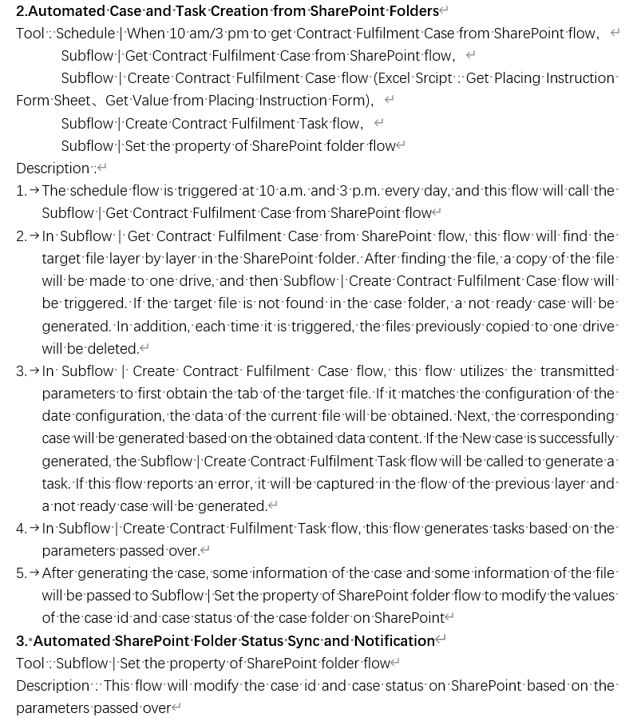
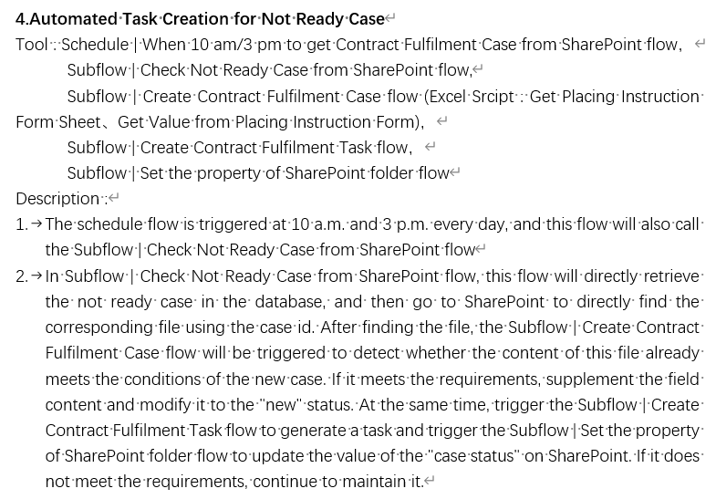
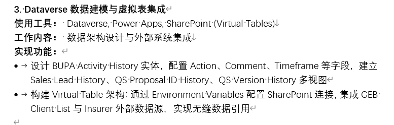
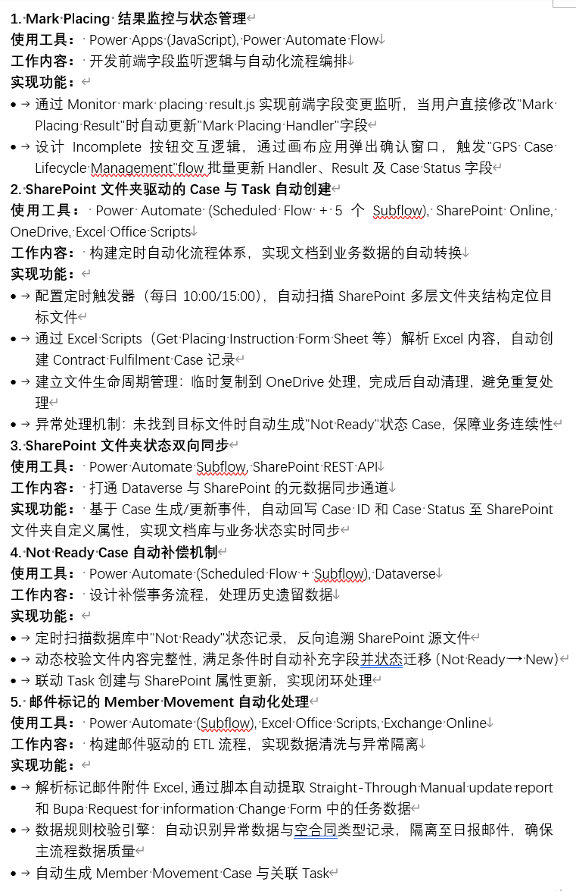

企业交付 英文文档 金融系统
BUPA（英国保柏集团）企业级保险履约系统重构，覆盖投保指令处理、销售线索全生命周期管理、跨系统数据同步三大业务域。面向香港及内地团队协作交付，所有技术交接文档采用英文输出。
1. 投保指令自动化流程设计
梳理从SharePoint文档接收到Dataverse Case/Task生成的全链路业务逻辑。设计定时调度机制（每日10:00/15:00双批次），覆盖文件定位、Excel解析、Case生成、异常补偿四个环节。

图1
2. 异常补偿与数据闭环
定义"Not Ready Case"异常状态与自动修复规则：定时扫描数据库遗留记录→反向追溯SharePoint源文件→动态校验完整性→补充字段并状态迁移→联动Task创建与属性回写。实现业务流程100%闭环，零数据遗漏。

图2
3. Sales Lead全生命周期与版本管理
梳理销售线索从Draft到Closed的状态机流转，定义节点准入条件与分支逻辑。设计审计追踪机制：任何状态变更自动触发历史记录生成，满足金融合规要求。针对保险表单频繁变更场景，设计Placing Form三层版本控制（自动存档+手动快照+历史锁定）。
图3
图4
4. 跨系统集成与数据架构
设计SharePoint-Dataverse-OneDrive-Exchange Online四方联动方案。构建Virtual Table架构集成外部数据源（Insurer/GEB Client List），定义数据字典与接口规范写入英文交接文档。

图5
量化成果：
• 系统上线后每日自动化处理200+投保指令Case，零人工干预
• 输出完整英文技术交接文档（Phase 1+Phase 2），香港团队可直接按文档接手
• 2个月内完成Phase 1交付并进入Phase 2迭代

图6
中后期加入企业级审批流程系统，识别人员异动导致审批断链痛点（离职/转岗/入职时"人走单死"）。
• 独立设计Reassignment Flow：覆盖人员移除、团队加入、任务转移三种场景，实现审批任务无缝交接
• 主导Withdraw一键撤销：从需求调研、原型设计到功能验收全流程参与，优化审批操作路径，降低误操作成本
• 集成PCF控件：将审批能力嵌入统一界面，确保企业合规与操作习惯一致
后期加入IT服务申请审批系统，主动发现系统可用性缺陷——移动端只能查看不能审批，前期设计仅限邮件审批。我判断不合理，但开发说"目前就是这样"。
• 推动双通道审批架构：主动联系业务方确认真实需求，反馈"App审批确实需要"。据此重构Power
Automate模块，实现App端与邮件端统一触发同一Flow，获业务部门明确认可
• 权限自动化：设计外部合作伙伴入驻的自动权限配置方案，系统自动分配Business Unit/Role/Manager，降低运维成本与人为错误率
• 数据看板：规划复杂业务数据展示逻辑，将Customer Page嵌入Model-Driven App，聚合关键审批信息
图1
图2
图3
机场管理与酒店合作的综合业务系统，负责数据状态管理与信息聚合模块。
• 数据状态回滚：设计Discard功能，实现Final表与Pending表间数据双向回退，保障业务流程各阶段数据可追溯性与一致性
• 审批评论实时聚合：将分散在不同渠道的Approve/Reject/Return/Submit评论统一沉淀至Power App
Timeline，构建完整业务操作审计链，提升协作透明度
• 到期预警与置顶：基于业务时效性要求，自动识别Master Data关键节点，未到期前置顶Timeline最上方，到期自动移除，降低业务遗漏风险
•
层级权限级联策略：针对机场-酒店多层级团队协作场景，设计权限继承规则——子级team被分享时父级自动同步（满足管理审计透明性），父级单独分享时子级不自动暴露（遵循最小权限原则）。通过Power
Automate条件分支实现层级标签驱动的差异化权限传播，平衡业务可见性与数据安全合规。
图1
图2